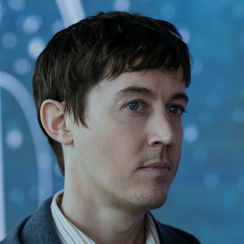

Grupo de Oxford
Will Downing
Aceita ter o cérebro preservado para a missão do Projeto Escada. Morre com Saul por perto; Jin chega depois.
Conteúdo até a temporada 1, episódio 8.
Ver Mapa de Conexões →HISTÓRICO DO PERSONAGEM
Temporada 1
Acompanhe os acontecimentos registrados até o episódio escolhido.
Episódio 01 — Countdown
Professor e amigo do grupo de Oxford. Seus sentimentos por Jin convivem com uma postura reservada.
Episódio 06 — The Stars Our Destination
Com câncer terminal, usa parte da herança de Jack para comprar uma estrela em nome de Jin.
Episódio 07 — Only Advance
Aceita ter o cérebro preservado para a missão do Projeto Escada. Morre com Saul por perto; Jin chega depois.
Episódio 08 — Wallfacer
A sonda do Projeto Escada parte com o cérebro de Will. Uma falha no sistema da vela a desvia da rota planejada, frustrando Jin e a equipe.
Personagens relacionados
- Jack RooneyAmizade próxima
- Jin ChengAmizade e afeto reservado
- Saul DurandAmigos de Oxford
- Auggie SalazarAmigos de Oxford
- Jin ChengPresente da estrela
- Thomas WadeCérebro para o Projeto Escada